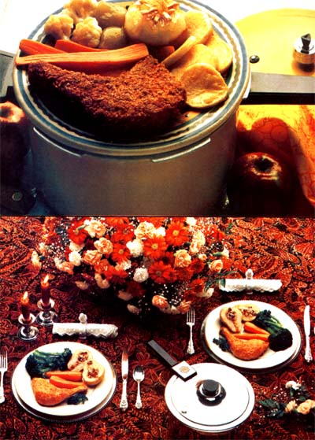

About 20 years ago, American cooks began to rebel against the hours they spent in the kitchen ... which prompted big food companies to start pushing "convenience" fare. Now, however-due largely to a general mistrust of the food industry and fear of the chemical additives it uses to color, flavor, and preserve its products there's a growing trend back toward natural, unadulterated provisions. And to lessen the time required to prepare such meals-there's now a wide range of kitchen equipment available . . . including the improved, modernized pressure cooker. With one of these cookers, food can be cooked three times as fast as by traditional methods while retaining more of its nutritional value and using less energy.
Each of the following dinners for two can be prepared-the whole menu at the same time in the same pot-in a three quart pressure cooker. It is important, however, to keep the level of the contents at least two inches below the lid to avoid possibly clogging the pressure pot's steam vent. Better use a larger cooker if you have big appetites!
PORK CHOPS WITH BROWNED POTATOES,
CHEESED CAULIFLOWER, FIGS, CARROTS, AND STEAM-BAKED APPLES
Dessert Apples
2 good-sized baking apples
2 tablespoons butter
2 tablespoons brown sugar
2 tablespoons bitter orange marmalade
2 tablespoons toasted slivered almonds
2 tablespoons maple syrup
Main Dish
1/3 cup raw bran flakes or bread crumbs 1 egg, lightly beaten 2 tablespoons milk 2 center-cut loin or rib pork chops, about 3/4-inch thick salt and freshly ground black pepper to taste 4 tablespoons butter 2 medium potatoes, peeled and sliced 3/8-inch thick 2 medium carrots, scraped and halved lengthwise 1/2 cup white wine 6 (or so) cauliflower 1/2 cup grated Swiss Gruydre cheese 4 whole Kadota figs (usually available canned)
Core the apples about three-quarters of the way down and peel the top one-third. Set each one on a square of aluminum foil large enough to enclose the fruit completely. Then cream together the butter and sugar. Into each apple put a tablespoon of the butter mixture, followed by an equal amount of marmalade, then almonds, and finally, another tablespoon of the butter-sugar mix. Wrap each apple tightly with the foil and set aside.
Spread the bran flakes (or bread crumbs) evenly on a dinner plate. Beat the egg lightly with 1-1/2 tablespoons of the milk and pour the mixture onto a second platter. Trim any excess fat from the pork chops, add salt and pepper, and press them firmly into the bran flakes to coat both sides and the edges. Cover them similarly with the egg-milk mixture, then again with the bran until they have a thick crust. (If the egg needs thinning, add the remaining milk.)
Heat the pressure cooker (without its base rack) to medium-high frying temperature, add three tablespoons of butter and-when it's hot-quickly sauce the pork chops until they're nicely browned. Then carefully lift out the meat, add the remaining butter to the pot, and lightly brown the potato slices and carrots, seasoning with salt and pepper to taste. When they're done, turn off the heat, spread the vegetables in an even layer on the bottom of the cooker, pour the wine over them and place the pork chops on top. Position the base rack on the meat. Put the cauliflowerets (seasoned lightly) into a small, open dish, sprinkle on half the grated cheese, and place the dish in the pot. Put the four figs directly on the base rack, add the apples (right side up), and fasten the lid on the cooker. Bring the pressure up to 15 pounds and cook for exactly five minutes.
When the time's up, remove the pot from the heat and reduce the pressure immediately. Unwrap the apples, dribble a tablespoon of maple syrup over each one, and let them cool until you're ready for dessert. Serve up the pork chops with the potatoes, carrots, figs, and cheesed cauliflower. Then scrape the bottom of the cooker to incorporate the brown drippings into the natural wine sauce, and spoon the liquid over the meat. Finish up with a sprinkle of grated cheese over the entire main dish.
SAUTEED, POACHED CHICKEN WITH
BROCCOLI, CARROTS, AND STEAM-BAKED PEARS
Dessert Pears
2 ripe pears
1 tablespoon fresh lemon juice
3 dates, pitted and chopped
6 walnut halves, coarsely chopped
2 tablespoons flaked coconut
2 tablespoons pure maple syrup
Main Dish
2 servings frying chicken (breasts, drumsticks or thighs) 2 tablespoons all purpose flour 2 tablespoons paprika salt to taste ' freshly ground black pepper to taste broccoli flowerets for 2 servings 4 medium carrots, scraped 2 tablespoons corn or peanut oil 1/2 cup dry white wine Cut the pears in halves lengthwise and scoop out their cores and strings. Rub the cut surfaces at once with lemon juice to prevent the flesh from darkening. Combine the chopped dates and walnuts with the coconut, then lightly pack this mixture into the hollows and stem channels of the pear halves. Wrap each pear section tightly (cut side up) in aluminum foil and set aside Mix and spread the flour and paprika on a plate. Pat the chicken with salt and pepper and roll it in the flour mixture.
Leave the broccoli flowerets in whole stalks, trimming only the tough bottom end and slashing the remaining stem into quarters. Cut any tough root ends from the scraped carrots.
Heat the pressure cooker to medium-high frying temperature, add the oil, and-when it's hot-quickly sauce the chicken to a golden brown. Turn off the heat and add the wine. Place the cooking rack in the pot-resting on the chicken-and carefully set the broccoli, carrots, and pears on top. Fasten the lid, bring the pressure to 15 pounds, and cook for five minutes.
When the cooking is completed, remove the pot from the heat, reduce the pressure at once, and serve the chicken and vegetables. Leave the pear packages to cool until you're ready to serve the dessert. Then open them and dribble half a tablespoon of the maple syrup over each pear half.
|
 |
|
|